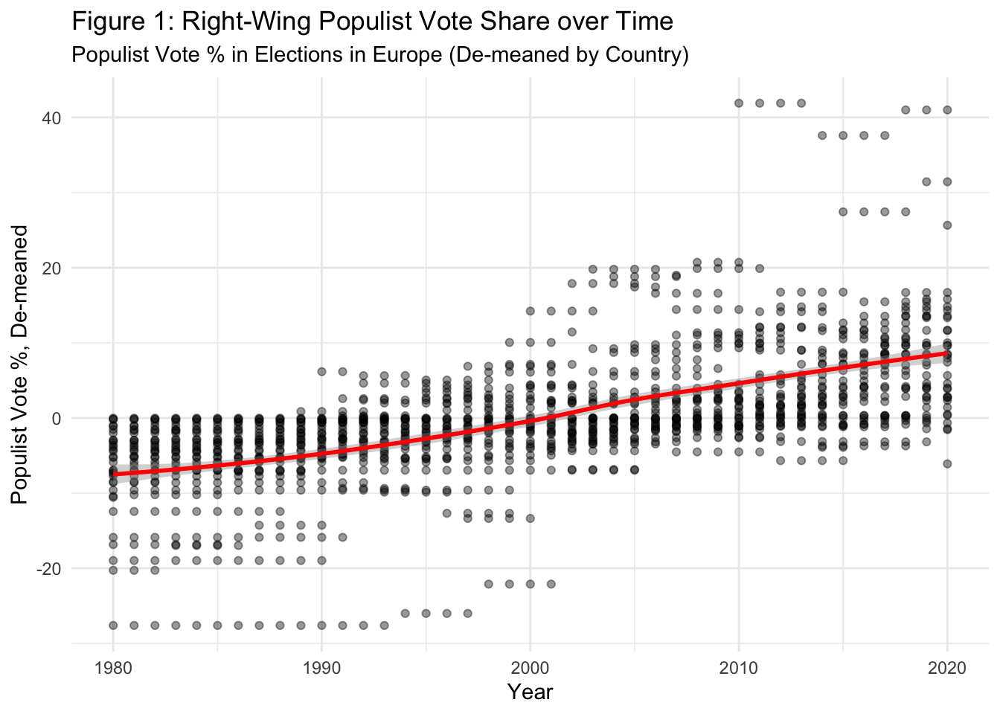
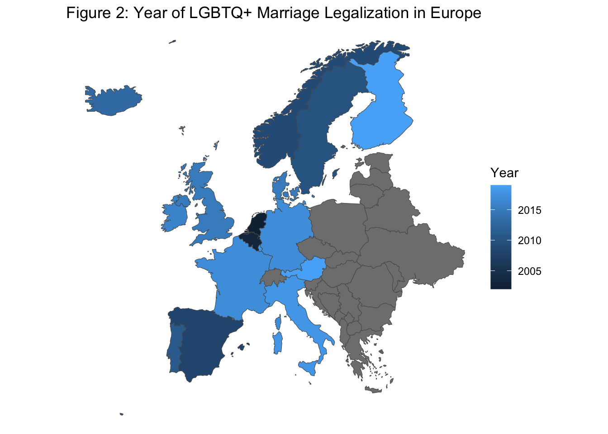
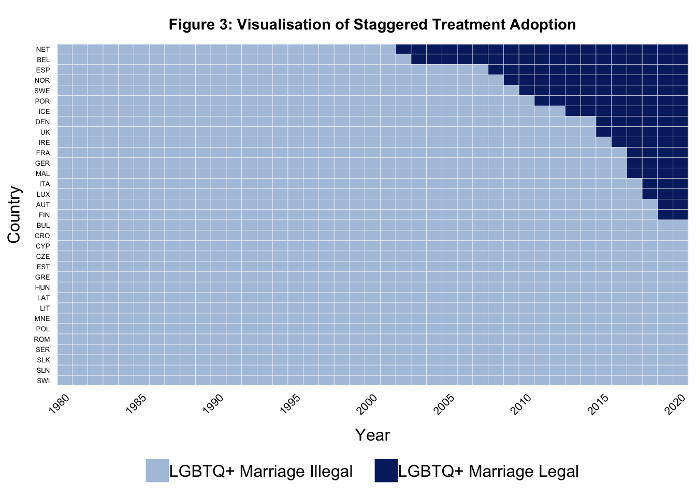
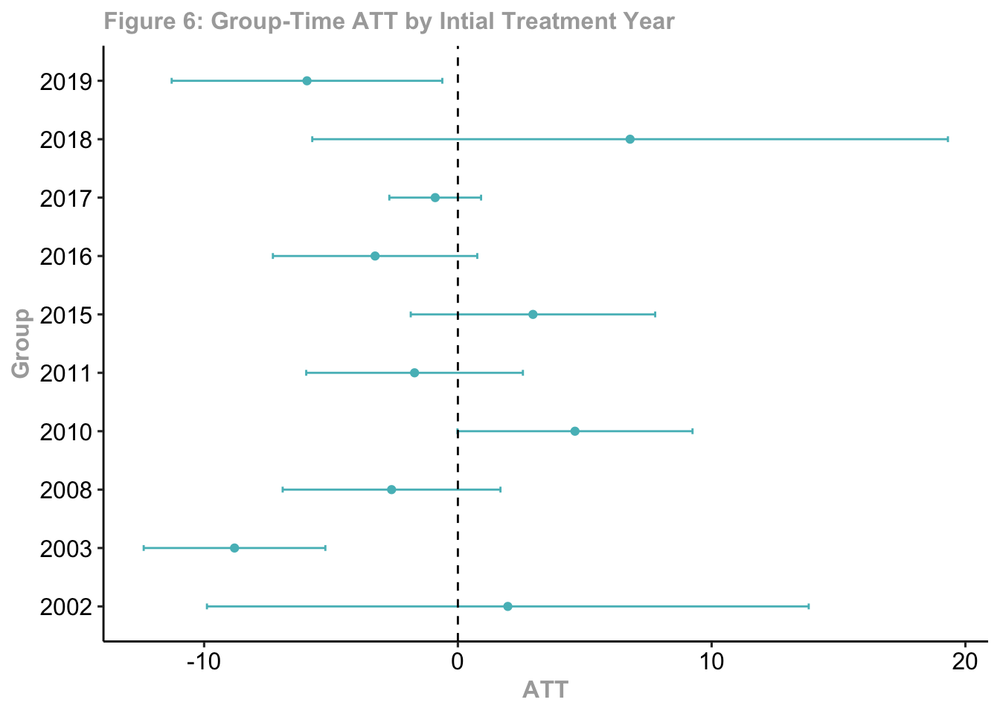
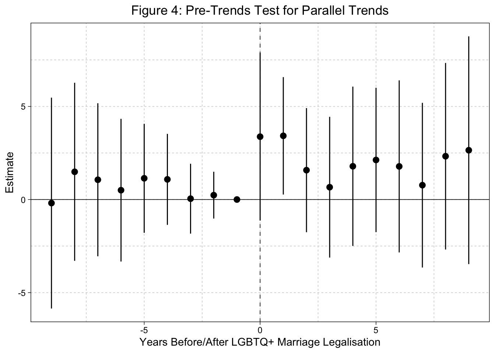
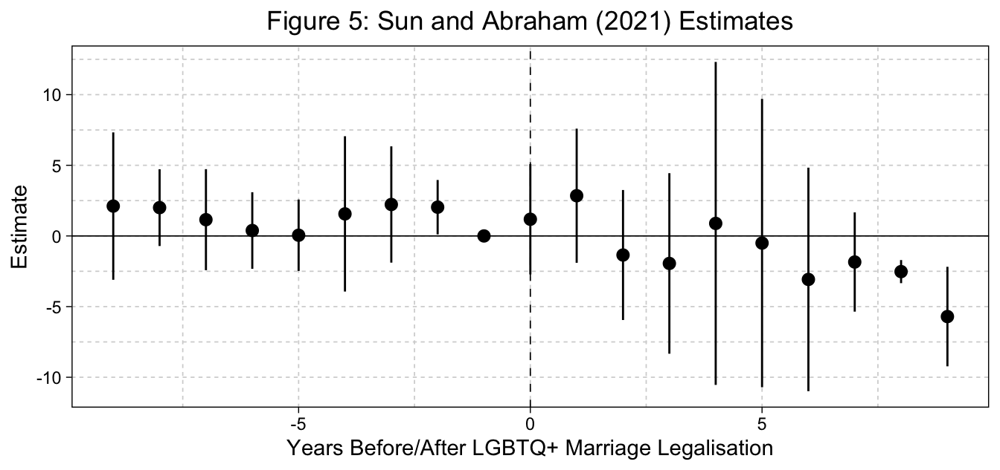
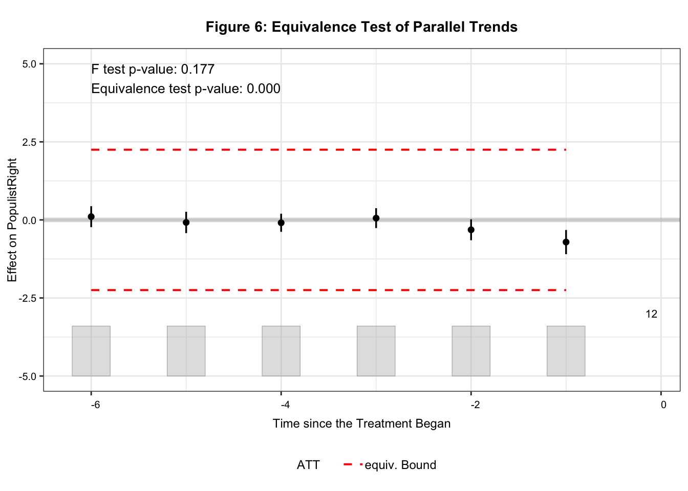

Legalisation of LGBTQ+ Marriage and Right-wing Populism
Evidence of the Cultural Backlash Hypothesis in Europe with Difference-in-Differences
Abstract
This paper was created for the summative assignment of the course: GV482 Current Issues in Political Science and Political Economy (2024-2025 Winter Term). The original question to which the paper responds to is:
Your goal is to study whether the increased tolerance for LGBT, at least in term of legal recognition, can be associated in any way with the rise of populism.
I have made minor edits to add content that was implied for the assignment, so was not originally included.
Replication code and data can be accessed at: https://github.com/kevinli03/kevinli03.github.io/tree/main/papers/gv482
Introduction
This paper explores the cultural backlash hypothesis regarding the rise in support for populist parties. More specifically, this paper focuses on the causal effect of legalising LGBTQ+ marriage on right-wing populist vote share in European countries. To explore this effect, I employ a staggered difference-in-differences design with covariates to condition for parallel trends. Employing several estimators, I find no significant causal effect of legalising LGBTQ+ marriage on right-wing populist vote share in European elections. I thus find insufficient evidence supporting the cultural backlash hypothesis.
I start by introducing the research question, describing the theoretical framework, as well as the treatment and outcome variables in question. Next, I discuss the staggered difference-in-differences research design, and the choices I made to justify the identification assumptions. Then, I use the two-way fixed effects estimator to estimate causal effects, and interpret these results. After that, I discuss the issues with the two-way fixed effects estimator when dealing with staggered treatments, and check my results with three modern difference-in-differences estimators. Finally, I provide robustness checks for the identification assumptions, and also note that there are theoretical reasons to believe the assumptions may be violated.
Theoretical Framework
Inglehard and Norris (2016) argue that changes in cultural values, as well as social and demographic factors, are the strongest explanation for the increased support of populist parties that we are witnessing throughout the western world. They argue this is because traditionally “privileged” groups are seeing their traditional positions in society undermined by increasing rights and recognition of minority groups and outsiders. These groups thus look to populist parties to “restore” their previous places in society.
One noticeable change in cultural values in recent decades has been the increased legal recognition of rights for LGBTQ+ individuals, such as legalisation of adoption for LGBTQ+ couples, legalisation of civil unions, and legalisation of marriage. These changes have challenged the traditional paradigms of gender and marriage. If the cultural backlash hypothesis is true, we should expect these changes to result in increased populist support. This paper aims to explore if the legalisation of LGBTQ+ marriage has a causal effect on the right-wing populist vote share in Europe.
The vote share of right-wing populist parties in Europe is the outcome variable. I focus on right-wing populist parties only, because a significant portion of the “cultural backlash” comes from white male voters who feel alienated and worse off by the progress other demographic groups have made (Inglehard and Norris 2016, Margalit 2019). Right-wing populist parties tend to be more conservative, pro-traditional values, and thus feed more into the discontent felt by white male voters (Inglehard and Norris 2016). Thus, if the cultural backlash hypothesis is true, we should expect that cultural changes, such as LGBTQ+ marriage, should have the largest noticeable effect on right-wing populist support.
Right-wing populists have gained significant vote share in Europe in the last few decades. Table 1 shows the mean vote share of right-wing populist parties in European countries from different time periods. In figure 1, we see a positive trend in right-wing populist support over time.
The treatment variable is the legalisation of LGBTQ+ marriage in a country. I utilise this treatment over other potential treatments, such as the legalisation of LGBTQ+ civil unions and adoption, because of the cultural and religious significance of marriage. Since the goal of this paper is to test the cultural backlash hypothesis, we are most likely to find evidence for the hypothesis if we focus on the treatment with the most cultural significance.
The treatment, legalisation of LGBTQ+ marriage, is a binary variable with staggered treatment implementation. The first European country to legalise LGBTQ+ marriage was the Netherlands, in 2001. Figure 2 below shows the countries that have legalised LGBTQ+ marriage, and when they have legalised it.

For the purposes of this paper, I will be slightly changing the way I define the treatment. The outcome variable, right-wing populist vote share, only updates in an election year. If the legalisation of LGBTQ+ marriage occurred in a non-election year, we would find no treatment effect, because there was no election for vote shares to update.
Thus, instead of using the year in which LGBTQ+ marriage was legalised as the initial period of treatment for a country, I will instead use the first election year following the legalisation of LGBTQ+ marriage. This transformation of the treatment does have an issue: some countries legalised LGBTQ+ marriage just one year before the election, while other countries did it several years before an election, and this altered definition of the treatment will not take this into account.
Difference-in-Differences Design
To explore how the legalisation of LGBTQ+ marriage in a country affects the right-wing populist vote share in a country, I employ a staggered difference-in-differences design. This design exploits variation in the assignment of treatment over two dimensions, such as variation over time and between units.

The staggered difference-in-differences design is a natural approach. In Europe, there are some countries that have legalised LGBTQ+ marriage, and some countries that have not, which provides variation between countries (units) in terms of a never-treated and treated group. The treated countries also vary in the year of legalising LGBTQ+ marriage, providing the variation over time.
The key assumption needed for causal identification is the parallel trends assumption. This assumption states that if the units that did receive the treatment were to hypothetically not receive the treatment, they would have followed the same trend in outcomes as the untreated units. In the context of this scenario, had a country who legalised LGBTQ+ marriage hypothetically not legalised it, their right-wing populist vote share would have followed the same trend as the countries that did not legalise LGBTQ+ marriage.
For this research question, the parallel trends assumption is unlikely to be met for a variety of theoretical reasons. First, immigration has been recognised as a potential driver of right-wing populist support (Pupaza and Wehner 2023, Dinas et al 2019). Different countries have different trends of immigration relative to their treatment year, which could affect the parallel trends assumption.
Unemployment is another variable that is commonly linked to electoral voting patterns, such as Lewis-Beck’s (1988) proposed vote-popularity function, which states that as unemployment or inflation increases, the electoral share of the incumbent decreases. The 2008 recession was also a major catalyst in increasing support for populist parties (Guriev and Papaioannou 2022). Countries may have different trends in unemployment and economic conditions relative to their treatment year, which could affect the parallel trends assumption.
Finally, globalisation is a phenomenon that has been linked to increased support for the populist-right, especially for the so-called “losers” of globalisation (Rodrik 2021). Different countries may face different trends regarding levels of globalisation, affecting the parallel trends assumption.
Thus, we will need to rely on conditional parallel trends: where the parallel trends assumption is satisfied within each stratum/level of a set of covariates. The set of covariates I propose to use are immigration as a percent of the population, unemployment rate, GDP growth, and import penetration, which address the concerns regarding parallel trends that I discussed previously. Conditional on these covariates, the parallel trends assumption is much more likely to be met. I will discuss further concerns regarding parallel trends and other assumptions (no anticipation, SUTVA) later in the limitations section.
Results with Two-Way Fixed Effects
To estimate the causal effect, I employ the two-way fixed effects (TWFE) estimator used for generalised difference-in-differences. The year and country fixed effects address between-country and between-year differences. Thus, assuming the parallel trends assumption is met, our treatment should be strictly exogenous, allowing us to estimate the causal effects. The model is given by equation 1.
\[ y_{it} = \alpha_{i} + \gamma_t + d_{it} \tau + {\mathbf x}^\top_{it}\pmb{\beta} + \varepsilon_{it} \tag{1}\]
\(y_{it}\) is the right-wing populist vote share for country \(i\) at year \(t\), \(\alpha_i\) and \(\gamma_t\) are year and country fixed effects, and \(d_{it}\) is the legal status of LGBTQ+ marriage in country \(i\) at year \(t\). Vector \(\mathbf x_{it}\) contains covariate values for country \(i\) in year \(t\) that are used to condition for parallel trends.
The results of this model are presented in table 2 as model 3. Table 2 also presents a naive simple linear regression between treatment and outcome (model 1), and a two-way fixed effects estimator without covariates (model 2).
The full model (model 3) finds an average treatment effect on the treated (ATT) of -2.161. This indicates that for countries that do legalise LGBTQ+ marriage, legalising LGBTQ+ marriage decreases right-wing populist vote share by 2.161 percentage points.
With a p-value of 0.306, this causal effect is not statistically significant at any conventional significance level. Thus, using this research design, there is insufficient evidence to conclude that the causal effect of legalising LGBTQ+ marriage on right-wing populist vote share is not zero. Thus, this design provides insufficient evidence for the cultural backlash hypothesis.
However, there are several limitations to the research design and the employed TWFE estimator. First, there are issues with the TWFE estimator when dealing with staggered treatment implementation. Second, there are theoretical concerns regarding the identification assumptions.
Limitations of TWFE Estimates
Under staggered treatment and heterogeneous treatment effects, the two-way fixed effects estimator is no longer an unbiased estimator of the average treatment effect on the treated, due to “forbidden comparisons” and issues with weighting (Goodman-Bacon 2021, Baker et al 2025, Roth et al 2023). It is quite plausible that heterogeneous treatment effects exist in this scenario, so the two-way fixed effects results from above may not be reliable. Several modern estimators have been developed to address this issue with two-way fixed effects (Baker et al 2025). I will test three of these modern estimators.
Callaway and Sant’Anna (2021) introduce a flexible matching and re-weighting estimator, grouping units by initial treatment year, and estimating the dynamic average treatment effect on the treated (ATT) for each initial treatment year group. They call this estimand the group-time ATT \(\tau_{g, t}^{ATT}\), defined in equation 2.
\[ \tau_{g, t}^{ATT} = \mathbb E[Y_t(1) - Y_t(0) \ | \ G_g = 1] \tag{2}\]
\(Y_t(1)\) and \(Y_t(0)\) are potential outcomes at time period \(t\), and \(G_g\) is a binary indicator that indicates if a country was first treated in time period \(g\). The estimated group-time ATTs aggregated by initial treatment year are shown in figure 6. We can summarise these multiple ATT estimates with a weighted average, weighting by the size of each group, displayed in table 3 (Baker et al 2025).

Interestingly, the ATT of countries initially treated in 2003 and 2019 are statistically significant, but in a negative direction. This implies that the legalisation of LGBTQ+ marriage in countries in 2003 and 2019 resulted in a decrease in right-wing populist support, which is contrary to the cultural backlash hypothesis. However, since only specific countries were initially treated in those years, it is hard to generalise those specific group ATT results. The weighted average of all the group-time ATT’s (in table 3) shows that as a whole, there is no significant causal effect of legalising LGBTQ+ marriage on right-wing populist vote share.
Liu et al (2024) propose an estimator that models untreated counterfactuals \(Y_{it}(0)\) for treated units using pre-treatment data, and then uses these estimated counterfactuals to compute treatment effects. The model for counterfactuals is shown in equation 3, and the results are shown in table 3.
\[ Y_{it}(0) = \alpha_i + \gamma_t + \mathbf x_{it}^\top \pmb{\beta} + \pmb{\lambda}_i^\top \mathbf f_t + \varepsilon_{it} \tag{3}\]
\(\alpha_i\) and \(\gamma_t\) are country and year fixed effects, \(\mathbf x_{it}\) is a vector of covariate values for country \(i\) at time \(t\), \(\pmb{\lambda}_i\) is a vector of factor loadings for country \(i\), and \({\mathbf f}_t\) is the vector for time-varying factors common to all units.
Gardner (2021) proposes a two-stage difference-in-differences estimator. First, a model is run with only units that are never-treated or yet-treated:
\[ y_{it} = \alpha_i + \gamma_t + {\mathbf x}_{it}^\top\pmb{\beta} + \varepsilon_{it} \tag{4}\]
Next, the outcomes are “residualised” by calculating the following for all units:
\[ \widetilde y_{it} = y_{it} - \widehat\alpha_i - \widehat\gamma_t - {\mathbf x}_{it}^\top\pmb{\beta} \]
These “residuals” are used as the dependent variable, and treatment as the independent variable, in a regression to obtain the causal effect. The idea behind Gardner’s estimation can be thought of as imputing the unobserved potential outcomes \(Y_{it}(0)\), similar to Liu et al (2024) approach. The results are shown in table 3.
All modern estimators also fail to find a statistically significant effect (table 3). Thus, these provide insufficient evidence that legalisation of LGBTQ+ marriage influences right-wing populist vote share in Europe. This result is not entirely surprising – these estimators have low power (Chiu et al 2025), and were unlikely to produce a statistically significant effect when it did not exist in the two-way fixed effects model.
Limitations with Parallel Trends
The key identification assumption for a difference-in-differences design is the assumption of parallel trends. The conventional way to test if conditional parallel trends assumption holds with the theoretically chosen covariates is to use an event study, also known as a pre-trend or leads-and-lags test.
Figure 4 presents a leads-and-lags test for parallel trends. We can see the 9 years proceeding the legalisation of LGBTQ+ marriage, there is no significant effect, implying lack of evidence for a violation of parallel trends.

However, in studies with staggered treatment implementation, pre-trend patterns detected in two-way fixed effects leads-and-lags tests can be caused by heterogeniety in treatment effects (Sun and Abraham 2021). Sun and Abraham propose an new event study estimator that resolves this issue. The results are shown in figure 5.
This robustness test estimates the effect in period -2 may be statistically significantly different than the reference category of period -1. This could be evidence of a potential violation of the parallel trends assumption. However, the more important concern in terms of internal validity is the substantive size of the parallel trends violation, not just if the estimate is statistically significant.

To check if the effect in -2 is also substantively significant in terms of a violation of parallel trends, we can employ the equivalence test (TOST) proposed by Liu, Xu, and Wang (2024). This test checks if the confidence intervals of our estimates exceeds a range around 0, with the bounds being \(\pm 0.36\) times of the standard deviation of the outcome. If the confidence intervals of our pre-treatment estimates do not exceed the equivalence range (the test is significant), then there is no evidence for a parallel trends violation.

The results of the equivalence test are shown in figure 6. We can see the test is significant, indicating no evidence for a parallel trends violation. Thus, from our robustness tests, there is no evidence to suggest a parallel trends violation.
However, these leads-and-lags tests alone are not enough to justify or refute meeting the parallel trends assumption. Pre-trend deviation tests have less power than our main two-way fixed effects estimator, which means it is more likely we falsely pass a leads-and-lags pre-trend test (Roth 2022). Furthermore, the parallel trend we are actually concerned with is between potential outcomes under control for the pre-treatment and the post-treatment period (which include unobservable counterfactuals), while this test only focuses on pre-treatment trends.
There are theoretical reasons to be concerned about the parallel trends assumption. As this analysis is comparing different countries, concerns regarding heterogeneous country characteristics, staggered treatment timing, and country specific shocks combine to increase the probability that the parallel trends assumption is not met, even with conditional covariates.
Other Limitations
Parallel trends is not the only assumption needed for difference-in-differences. No anticipation is another assumption, which states that units in the treated group do not anticipate and strategically react to the treatment prior to the treatment being implemented. More technically, this assumption asserts that the observed right-wing populist vote share in pre-treatment periods is equal to the potential outcome under control of right-wing populist vote share.
However, this assumption is difficult to justify. It is unlikely that a major legal change such as LGBTQ+ marriage legalisation was completely unknown to the public before its implementation. It is plausible that this would have caused voters to respond to the LGBTQ+ marriage by voting populist-right even before the official legalisation, violating the anticipation effect. This anticipation would likely differ between countries, so adjusting our model to account for anticipation would be difficult.
Another identification assumption that is hard to justify is the stable unit treatment value assumption (SUTVA). It seems plausible that a treatment in one country could change the potential outcomes relating to right-wing populist vote share in another country. For example, the Netherlands, the first country to legalise LGBTQ+ marriage in Europe, and other high profile legalisations, may attract international media coverage. This media coverage may have effects on the populist support in other countries, affecting the potential outcomes of other countries, and violating SUTVA.
Thus, these potential concerns regarding our causal identification assumptions may create doubts about the design’s conclusion that there is no causal effect of legalising LGBTQ+ marriage on right-wing populist vote share.
There are other limitations of this study outside of identification assumptions. First, this study only focuses on a subset of European countries - it is unclear if the results seen here will be reflected in other scenarios, such as the rise of right-wing populism in the USA or Brazil. Second, I have focused on Europe as a whole - but there is likely heterogeneity in effects within Europe. It is plausible more religious nations, or nations with certain electoral systems, will have different effects and responses to LGBTQ+ marriage legalisation. Finally, since marriage is usually the last LGBTQ+ right enshrined into law, we may be undercounting the effect of cultural backlash in this study, as perhaps some backlash has already occurred prior to the legalisation of LGBTQ+ marriage.
Conclusion
In this paper, I explored the cultural backlash hypothesis by testing if the legalisation of LGBTQ+ marriage has a significant causal effect on right-wing populist vote share in Europe. To estimate the causal effects, I employed a staggered difference-in-differences research design with covariates to condition for parallel trends.
The two-way fixed effects estimator found no significant causal effect of legalising LGBTQ+ marriage on right-wing populist vote share. To address concerns around the two-way fixed effects estimator when dealing with staggered treatment implementation, I employed three modern difference-in-differences estimators. These three estimators also failed to find a significant causal effect of legalising LGBTQ+ marriage on right-wing populist vote share.
However, this research design is not without its limitations. First, there are theoretical concerns over identification assumptions, including the parallel trends assumption, no anticipation assumption, and the stable unit treatment value assumption. Second, this paper may not be generalisable to a broader context beyond Europe. Third, this paper does not explore heterogeneity in effects. Finally, this paper does not address the possibility of backlash to LGBTQ+ rights occurring before LGBTQ+ marriage is legalised.
References
Baker, A., Larcker, D. F., Wang, C. C. Y. (2022) ‘How Much Should We Trust Staggered Difference-in-Differences Estimates?’, Journal of Financial Economics, 144(2), pp. 370-395.
Baker, A., Callaway, B., Cunningham, S., Goodman-Bacon, A., Sant’Anna, P. H. (2025) ‘Difference-in-Differences Designs: A Practitioner’s Guide’. Available at: https://doi.org/10.48550/arXiv.2503.13323.
Callaway, B., and Sant’Anna, P. H. (2021) ‘Difference-in-differences with multiple time periods’, Journal of Econometrics, 225(2), pp. 200-230.
Chiu, A., Lan, X., Liu, Z., Xu, Y. (2025) ‘Causal Panel Analysis under Parallel Trends: Lessons from a Large Reanalysis Study’. Available at: https://doi.org/10.48550/arXiv.2309.15983.
Dinas, E., Matakos, K., Xefteris, D., and Hangartner, D. (2019) ‘Waking Up the Golden Dawn: Does Exposure to the Refugee Crisis Increase Support for Extreme-Right Parties?’, Political Analysis, 27(2), pp. 244-254.
Goodman-Bacon, A. (2021) ‘Difference-in-Differences with variation in treatment timing’, Journal of Econometrics, 225(2), pp. 254-277.
Guriev, S. and Papaioannou, E. (2022) ‘The Political Economy of Populism’, Journal of Economic Literature, 60(3), pp. 753-832.
Inglehard, R. F. and Norris, P. (2016) ‘Trump, Brexit, and the Rise of Populism: Economic Have-Notes and Cultural Backlash’, HKS Working Paper, No. TWP16-026. Available at: http://dx.doi.org/10.2139/ssrn.2818659
Lewis-Beck, M. S. (1988) ‘Economics and the American Voter: Past, Present, Future’, Political Behavior, 10(1), pp. 5-21.
Liu, L, Wang, Y., and Xu, Y. (2024) ‘A practical guide to counterfactual estimators with causal inference with time-series cross-sectional data’, American Journal of Political Science, 68(1), pp. 160-176.
Margalit, Y. (2019) ‘Economic Insecurity and the Causes of Populism, Reconsidered’, Journal of Economic Perspectives, 33(4), pp. 152-170.
Pupaza, E., and Wehner, J. (2023) ‘From Low-Cost Flights to the Ballot Box: How Eastern European Migration Shaped Far-Right Voting in London’, The Journal of Politics, 85(5), pp. 1214-1228.
Rodrik, D. (2021) ‘Why Does Globalization Fuel Populism? Economics, Culture, and the Rise of Right-Wing Populism’, Annual Review of Economics, 13, pp. 133-170.
Roth, J., Sant’Anna, P. H., Bilinski, A., and Poe, J. (2023) ‘What’s trending in difference-in-differences? A synthesis of the recent econometrics literature’, Journal of Econometrics, 235(2), pp. 2218-2244.
Roth, J. (2022) ‘Pretest with Caution: Event-Study Estimates after Testing for Parallel Trends’, American Economic Review: Insights, 4(3), pp. 305-322.
Sun, L. and Abraham, S. (2021) ‘Estimating dynamic treatment effects in event studies with heterogenous treatment effects’, Journal of Econometrics, 225(2), pp. 175-199.